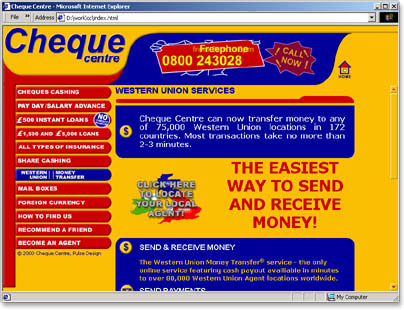

Cheque Centre is a United Kingdom-based financial services company providing such services as money transfers, loans, salary advance, and others.

June 23, 2001
Cheque Centre is a United Kingdom-based financial services company providing such services as money transfers, loans, salary advance, and others.
